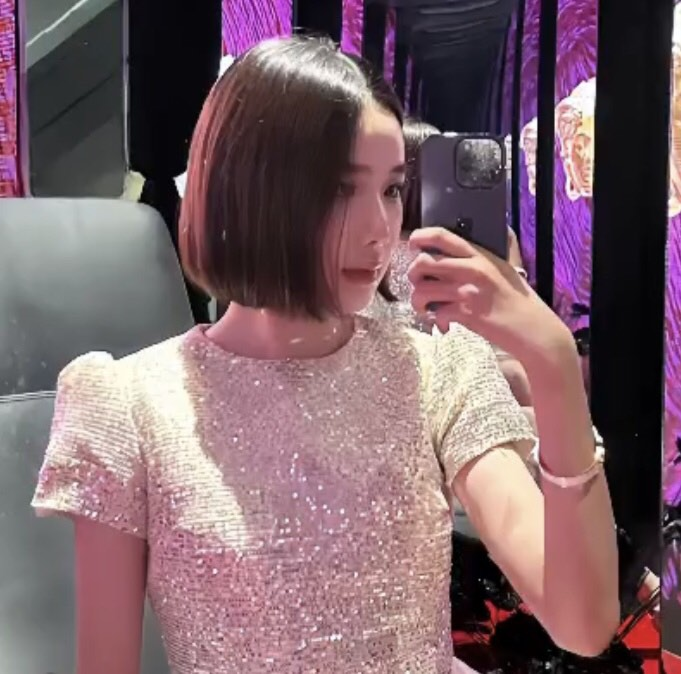

cô ấy

Cô ấy tên là : Bùi Thanh Tâm
Cô ấy từng là một người tôi rất yêu,hmm. Dù bây giờ chúng tôi không còn bên cạnh nhau nữa nhưng tôi vẫn mong cô ấy có thể sống vui vẻ và tìm được một người tốt hơn tôi, thay tôi chữa lành những vết thương tôi để lại cho cô ấy.
Một chút thông tin về cô ấy
- Ngày sinh: 12/9/2005
- Quê quán: tây hồ vippro
- sở thích:
- cô ấy thích đi xem phim
- cô ấy thích sự nhẹ nhàng tôi dành cho cô ấy
- cô ấy thích những nơi riêng tư chỉ có 2 đứa
- cô ấy thích đi lượn hồ vào đêm muộn, ngồi uống nước ở hồ tây
- cô ấy thích ăn:
- gà jolibee
- bánh tráng nướng hồ tây và các món ăn vặt
- dooki
- trà sữaaaaaaa
tôi chỉ muốn chia sẻ một số kỷ niệm mà chúng tôi có :
- Chúng tôi quen nhau vào một hôm diễn chung một sự kiện của trường. Lúc đấy cô ấy thích và tán tôi nhưng tôi không có cảm xúc gì với cô ấy cả. Bỗng nhiên tôi gặp cô ấy dưới sân trường và nhìn cô ấy từ đằng sau, dáng người thon thả và dôi chân dài như khiến tôi rơi vào lưới tình vậy. Từ đó tôi cũng mở lòng mình nhiều hơn và chúng tôi cũng đã có một khoảng thời gian rất đẹp ..
- Chúng tôi có rất nhiều kỷ niệm nhưng tôi nhớ nhất là lần đó tôi bị ốm, em đến nhà nấu ăn cho tôi và chào hỏi gia đình tôi. Cô ấy ôm tôi trong vòng tay mà không rời tôi một phút giây nào. Tôi cảm thấy nó khá là ấm áp và không gì có thể hơn được nằm trong vòng tay của cô ấy chỉ sau vòng tay của mẹ.
- hmmm, vì sao chúng tôi lại chia tay nhỉ..? tất nhiên hạnh phúc cũng đi kèm với cãi vã và chúng tôi không thể vượt qua nó được. Cô ấy giận dỗi tôi rất nhiều và với tần xuất liên tục mà còn rất lâu nữa, cô ấy block, cô ấy im lặng, cô ấy tránh né. Sau rất nhiều lần như vậy, tôi cảm thấy thanh tình cảm trong tôi nó cạn dần vậy, vì vậy nó đã dẫn đến câu nói chia tay.. Khoảng thời gian đó tôi biết là tôi sai nhưng có lẽ cái tôi của tôi quá cao để nói lời xin lỗi dành cho cô ấy.
Sau tất cả tôi đã có thể nói lời xin lỗi tới cô ấy và chúc mừng sinh nhật cô ấy vào tháng 9 dù chúng tôi đã chia tay nhau vào tháng 7. Sau cùng tôi chỉ mong cô ấy tìm được hạnh phúc vủa mình và luôn nở nụ cười trên môi.
"Không biết nữa, biết nó sẽ phải kết thúc nhưng sẽ luôn hạnh phúc vì nó đã bắt đầu" - Msuykey